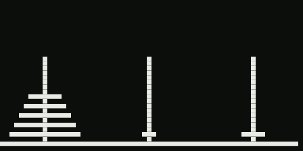
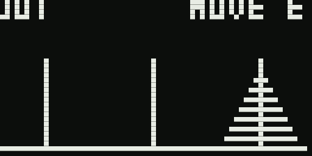

Tower of Hanoi
K. Semrad · DREAMER no. 17 (1982-01) p. 10 1K RAM


Move seven discs from peg 1 to peg 2 or 3, one at a time and never a larger on a smaller. Press the from peg and then the to peg. An illegal move shows an error message, and the win screen shows the move count.
Keys
1/2/3 = FROM peg then TO peg; any key restarts.
Files
| File | Version | Load | Run |
|---|---|---|---|
| Tower Of Hanoi.c8 | main | 0200-03FF | C000 |
Listing as transcribed (with notes): tower_of_hanoi.txt
Source
DREAMER no. 17 on archive.org, p. 10 (PDF page 19). Author: K. Semrad.
Corrections applied
- 0372 0A35 -> 6A35 (a machine-code call to non-existent RAM; 6A35 sets the x of the third peg, by symmetry with 6A09 and 6A1F).
- 037E 00E0 -> 00EE (the disc routine must return when a slot is empty; with 00E0 it clears the screen and loops forever).
Open doubts
- 03DE-03DF print 'MOVE' instead of 'MOVES'; left as printed.